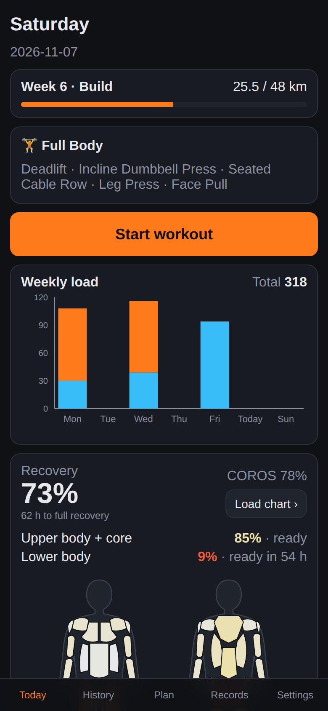
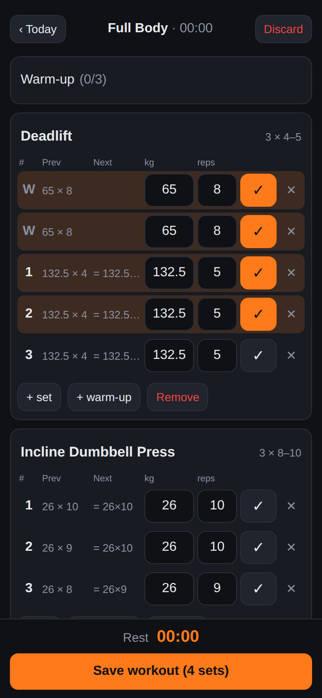
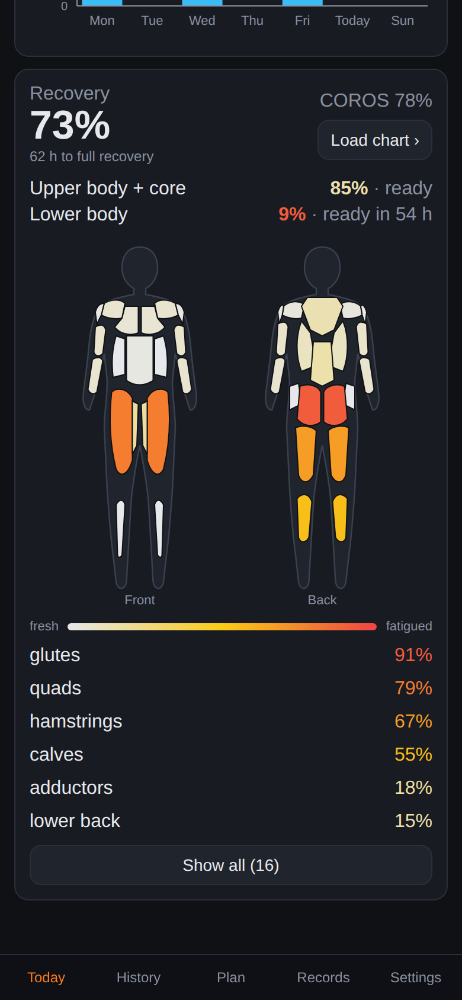
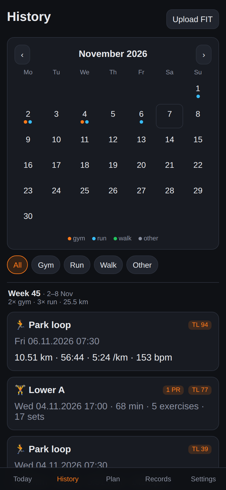
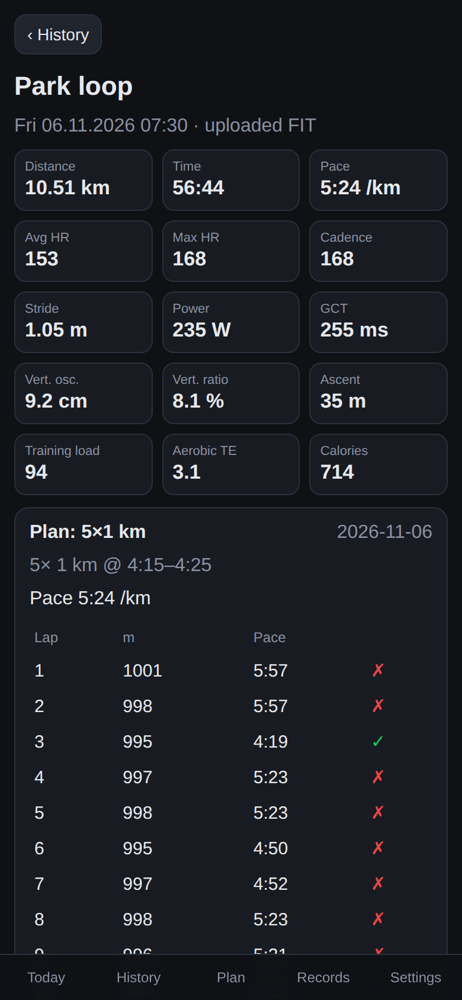
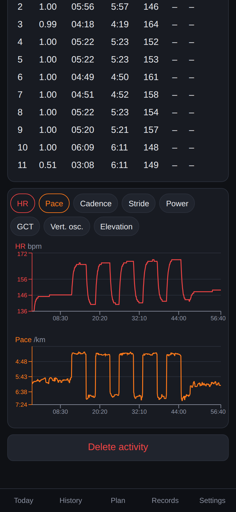
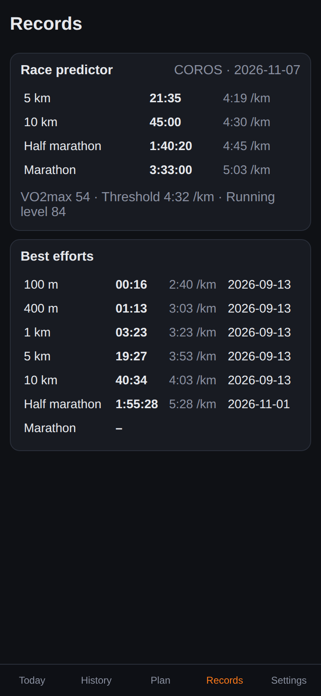

Hybridly
A self-hosted training tracker for people who lift and run. Log gym sessions from your phone, pull runs from COROS, and see load, recovery and records in one place.














Screenshots use fictional demo data.
What it does
Strength logger
Templates, warm-ups, sets by reps, time or distance, and grips (V-grip, wide…) tracked separately. Suggests the next weight with double progression and holds back while you are fatigued. Mid-workout you can replace an exercise (with suggestions) or superset it with another.
Progress & stats
Per-exercise charts of estimated 1RM, top set and weekly volume, records, estimated rep maxes and a "to beat last time, try…" target. Each workout shows volume per muscle and the change against four weeks earlier.
COROS runs
Syncs activities through the official COROS connection: laps, heart rate, pace, running dynamics and a map from the original FIT file.
Load & recovery
Gym and running load on one scale, a weekly load chart, overall and upper/lower-body recovery, and a muscle fatigue map.
Running plan & AI coach
Import a running plan and compare it with what you ran. Export a training summary for any date range to paste to your AI coach, and send strength workouts to Strava.
Records
Best efforts from 100 m to the marathon, the COROS race predictor and your bodyweight trend.
Install
You need a Linux machine (a home server or a spare laptop) with Docker and Git. Then run:
curl -fsSL https://raw.githubusercontent.com/MariuszMackowski/Hybridly/main/install.sh | bashThe script:
- clones the app into
~/hybridly, - creates
.envwith a random database password and asks for the port and timezone, - builds and starts the containers and adds a starter exercise catalog,
- optionally starts Hybridly on boot (systemd).
Then open http://<machine>:8080. Run the same command again to update.
Use it on your phone
Hybridly is a web app you add to your home screen. The easiest way to reach it securely from anywhere is Tailscale:
sudo tailscale serve --bg --https=443 http://localhost:8080Open the HTTPS address it prints on your phone and choose Add to Home Screen. Set PUBLIC_URL in .env to that address so connecting COROS returns straight to the app.
Good to know
- Single user, with no login: do not expose it to the open internet.
- All data stays on your machine in PostgreSQL. FIT files are kept in
data/fit. - COROS is optional; you can also upload
.fitfiles by hand.